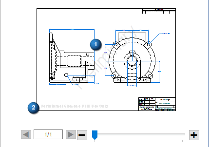
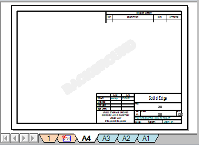

Paper Print settings for draft documents
Controls how a draft document is printed from the Paper Print page on the File menu. The size of the largest sheet in the drawing is shown in the Actual paper size field on the Paper Print page.
- Printer
-
Specifies the printer you want to print to. You can select from a list of all the configured printers available for printing.
Note:A tooltip showing the status, type, and location of the currently selected printer is displayed when you hover over the Printer list.
- Settings
-
Opens the (Print) Options dialog box for setting the margins, origin, and scale.
- Properties
-
Opens the Printer Properties dialog box for the currently selected printer, where you can make changes to paper size and orientation.
- Copies
-
Specifies the number of copies you want to print.
- Collate
-
Organizes sheets when you print multiple copies. With this option selected, if you print two copies of a three-page document, then the sheets are organized 1,2,3,1,2,3; with this option deselected, the sheets are organized 1,1,2,2,3,3.
- Print to file
-
Displays the Print To File dialog box when you select the Print command.
- Print all colors as black (does not apply to links or embedded files such as Excel or to shaded drawing views)
-
Specifies that all Solid Edge graphics and text are printed as black on a color printer. Foreign objects, such as Excel spreadsheets, that are linked or embedded or shaded drawing views use their own display characteristics when printed.
- Include grid display on print
-
Prints the drawing grid on the sheet, when it is displayed in the draft document using the Show Grid command.
- Print what
-
Specifies which part of the document you want to print or plot. When printing from the 2D Model sheet or the Draw In View window, you can print only what's shown on the sheet or in the window.
- All sheets
-
Prints all drawing sheets in the active document.
- Active sheet
-
Prints the active sheet, which is currently displayed in the print preview window.
- Current display
-
Prints the currently displayed portion of the active window.
Note:To print at a 1:1 scale, this option must be cleared. Otherwise, the print area is set to the window size and not the actual sheet size.
- Sheets
-
Specifies the range of sheets that you want to print. You can enter the starting page you want to print as the From value and the ending page you want to print as the To value.
- Include watermarks on print
-
When selected, watermarks are shown in the preview area of the Paper Print page and printed on the document.
This check box applies to watermarks created with the Watermark command (1), or to text boxes converted to watermarks using the Set text box as watermark option on the Text Box Properties dialog box.

This setting does not apply to system-generated watermarks, such as the one shown in the lower-left corner of the document preview (2), or the word "BACKGROUND" on the Background sheet in draft:

How do I
Print a documentPrint to a file
Print an area
Print at a 1:1 scale
Print a composite drawing
Print to Adobe PDF
Change PDF printer properties
Learn more
Printing documentsUsing the Paper Print page
Printing composite drawings
Look up more details
Paper Print settings for model documents(Print) Options dialog box
Print Area dialog box
Options-Multiple Sheets per Page
Options - Single Sheet per Page
Print Drawings - Select Sheets dialog box
Print Drawings - Select Documents dialog box
Preview dialog box